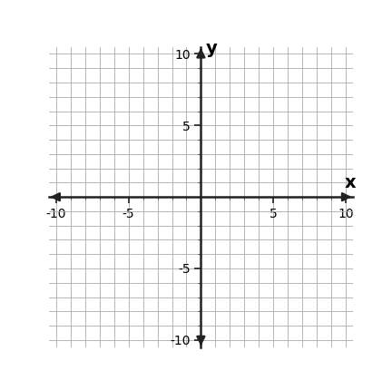
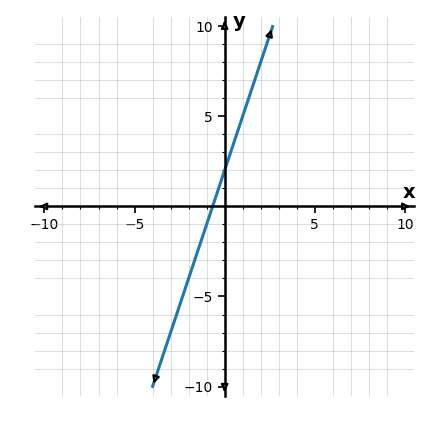
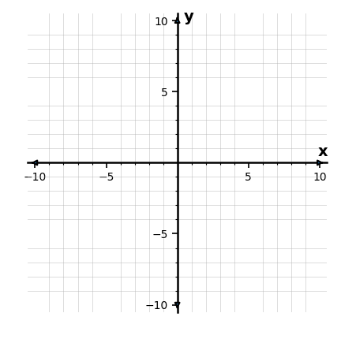
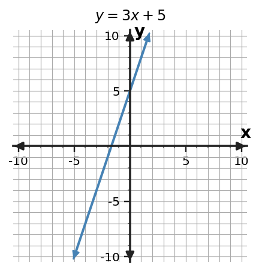

One relationship can be seen in several useful ways.
Section Introduction
Seeing the same relationship in different forms
A table lists selected values. A graph shows those values as points and reveals shape. An equation or rule gives a compact calculation. A context gives the quantities meaning.
The important idea is that the form can change while the relationship stays the same.
As you read, keep asking: What input is being used? What output belongs with it? What feature stays consistent from one representation to another?
Vocabulary / Key Notation Preview
input · output · ordered pair · representation · rate
Sort the vocabulary. Write each vocabulary word in the column that best matches what you know right now. You may move a word later.
| Know for sure | Recognize | Don't know yet |
|---|---|---|
Section Preview
Skim before close reading. Look at the headings, tables, graphs, and examples. Find 1–2 things you notice and 1–2 things you wonder about.
| What I noticed | |
|---|---|
| What I wonder |
Close Reading Directions
READ IN SHORT CHUNKS. Annotate the words and visuals together. Underline evidence, circle or highlight bold vocabulary, label arrows or important features, connect sentences to tables and graphs, and jot short questions or connections in the margins. Use these directions through the What's To Come section and the reading that follows.
What's To Come
PREVIEW / DECOMPOSE. Use the connected parts to see where this section is headed. Annotate the representations and prompts as you work.
Use the shared input-output rule for every part.
$y=2x+1$
| x | y |
|---|---|
| 0 | |
| 1 | |
| 2 | |
| 4 |

Part (a)
Complete the value table for x=0, 1, 2, and 4.
Part (b)
Use your completed table from part (a) to graph the relationship on the coordinate plane.
Part (c)
Use your graph from part (b) to read the y-value when x=3.
Part (d)
Explain how your table and graph show the same relationship. Use one value from part (a) and the value from part (c).
I Can 1Find matching values across different representations.
When representations describe the same relationship, the same input must lead to the same output. Start with a convenient input and trace its output in each form.
In a table, read across a row. In an equation, substitute the input. On a graph, find the point with that x-coordinate and read its y-coordinate. In a context, translate the input and output back to the named quantities.
One matching pair is useful evidence, but checking more than one pair is stronger. A pattern of matching values shows that the representations are connected rather than accidentally agreeing once.
Equation / Rule
$y=3x+2$
At $x=2$, $y=8$.
Table
| x | y |
|---|---|
| 0 | 2 |
| 1 | 5 |
| 2 | 8 |
Graph

Context / Situation
A score starts at 2 points and increases 3 points per round.
Connect the operation or feature back to the relationship you are describing.
Example 1: Match an input-output value
For the rule $y=4x-1$, which row matches the relationship when the input is 3?
| Choice | x | y |
|---|---|---|
| A | 3 | 11 |
| B | 3 | 13 |
| C | 11 | 3 |
You Try It 1: Match an input-output value
A plant is 6 cm tall at week 0 and grows 2 cm each week. Which table entry matches week 4?
| week | height (cm) |
|---|---|
| 2 | 10 |
| 4 | ___ |
| 6 | 18 |
Stop and Discuss
- Why should the same input be used when comparing two representations?
- How can checking a second input make your evidence stronger?
- What does an ordered pair tell you about a relationship?
I Can 2Create a table or graph from another representation.
Creating a new representation means translating without changing the relationship. A rule can generate a table by choosing inputs and calculating outputs. A table can become a graph by plotting every row as an ordered pair.
Keep the input in the x-position and the output in the y-position unless the problem explicitly defines different axes. Labeling and scale matter because a correct pair can be misplaced on a graph if the scale is read incorrectly.
After translating, check one or two values against the original form. That quick check catches reversed coordinates and arithmetic errors.
Rule
$y=-x+4$
| x | y |
|---|---|
| -2 | 6 |
| 0 | 4 |
| 3 | 1 |
Graph

Connect the operation or feature back to the relationship you are describing.
Example 2: Translate to a new representation
Complete a table for $y=2x+4$ using inputs $-1,1,3$. Then write the ordered pairs.
| x | y |
|---|---|
| -1 | ___ |
| 1 | ___ |
| 3 | ___ |
You Try It 2: Translate to a new representation
The table below describes a relationship. Plot all three ordered pairs on the blank coordinate plane.
| x | y |
|---|---|
| -2 | -4 |
| 0 | 0 |
| 2 | 4 |

Stop and Discuss
- What must stay unchanged when a relationship is translated into a new representation?
- Why can a correct table still lead to a wrong graph?
- What is one quick way to check a graph you created?
I Can 3Check whether two representations describe the same relationship.
To decide whether two representations match, compare their mathematical behavior, not their layout. Generate values from each representation using the same inputs.
If the outputs disagree for even one shared input, the representations cannot describe exactly the same relationship. If several values match, also compare a structural feature such as constant rate or starting value.
For a linear relationship, the rate and one known point determine the line. That makes rate plus a matching point especially efficient evidence.
Table
| x | y |
|---|---|
| 0 | 5 |
| 2 | 11 |
| 4 | 17 |
Rate: $\frac{11-5}{2-0}=3$
Graph

Same start and same rate give consistent evidence for the same linear relationship.
Connect the operation or feature back to the relationship you are describing.
Example 3: Check two representations
Does the table match the rule $y=2x+7$? Explain using two rows.
| x | y |
|---|---|
| 0 | 7 |
| 2 | 11 |
| 5 | 17 |
You Try It 3: Check two representations
Does the table match the rule $y=4x-2$? Use a specific value as evidence.
| x | y |
|---|---|
| 0 | -2 |
| 1 | 2 |
| 3 | 9 |
Stop and Discuss
- What kind of evidence proves two representations do not match?
- For a line, why are rate and one point powerful evidence?
- Why is visual similarity alone not enough?
I Can 4Use values, rate, or pattern as evidence.
Evidence is a mathematical reason that supports a claim. Useful evidence includes matching ordered pairs, a common rate of change, a shared starting value, or the same repeated pattern.
Choose evidence that fits the representation. Tables make differences or ratios easy to compute. Graphs make intercepts, direction, and shape visible. Equations show operations and parameters directly.
A strong explanation names the feature, shows the calculation or value, and states how that feature supports the conclusion.
Value evidence
Rule: $y=5x+1$
At $x=2$, $y=11$. If a table also contains $(2,11)$, that value agrees.
Rate evidence
From $(1,6)$ to $(3,16)$:
$\frac{16-6}{3-1}=5$
The rate matches the coefficient 5.
Connect the operation or feature back to the relationship you are describing.
Example 4: Build an evidence statement
A table has points $(1,9),(3,15),(5,21)$. Find the constant rate and use it to explain whether the rule $y=3x+6$ is plausible.
You Try It 4: Build an evidence statement
A relationship has outputs 12, 17, 22 for inputs 0, 1, 2. State two pieces of evidence that could be used to describe its pattern.
Stop and Discuss
- What makes a statement count as mathematical evidence?
- When would rate be more useful than one matching value?
- How can a graph scale affect the evidence you collect?
Vocabulary Reference
| Term | Meaning in this section |
|---|---|
| input | the value that goes into a relationship |
| output | the value produced by the relationship |
| ordered pair | an input and output written as $(x,y)$ |
| representation | a way to show a relationship, such as a rule, table, graph, or situation |
| rate | how much the output changes for a one-unit change in input |
Section Summary
- A relationship can be represented with a rule, table, graph, and situation.
- Matching representations share the same input-output values.
- Rate and pattern are strong evidence when checking whether representations agree.
- Graph scale must be read before using graph values.
What I Understand Now
Write one connection you can now make among the ideas in this section. Use a specific value, representation, algebra step, or vocabulary word as evidence.
Common Mistakes to Watch
| Mistake | What to remember |
|---|---|
| Matching by appearance instead of values | Check actual input-output pairs. Two displays can look different and still match, or look similar and not match. |
| Ignoring graph scale | Read the labels and tick spacing before deciding what coordinates or rate the graph shows. |